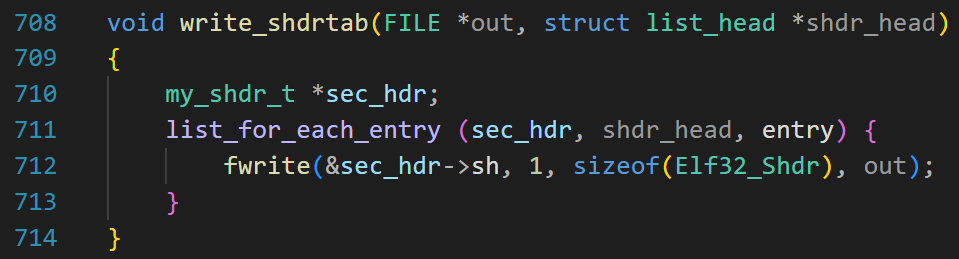
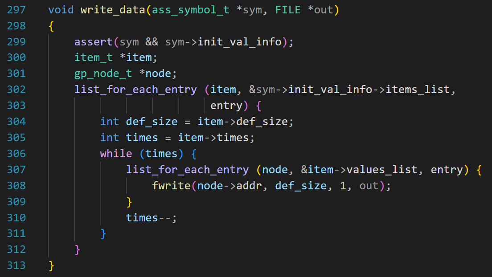
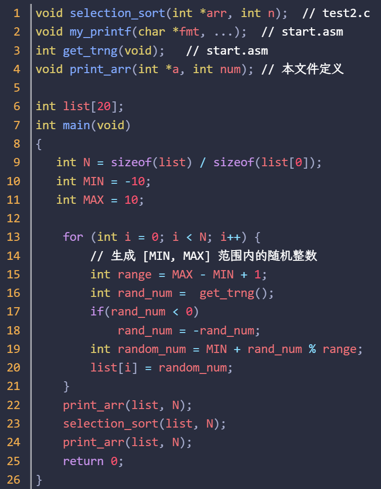
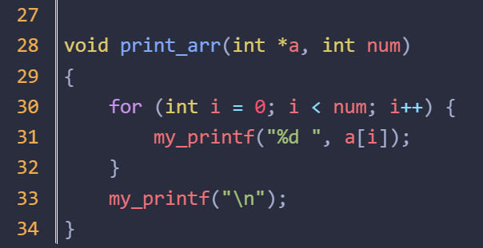
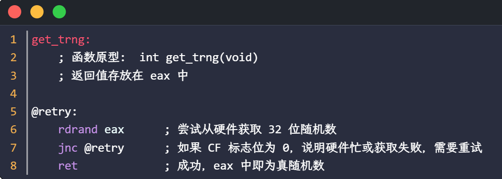
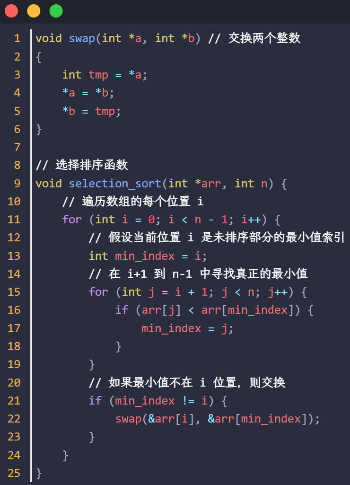
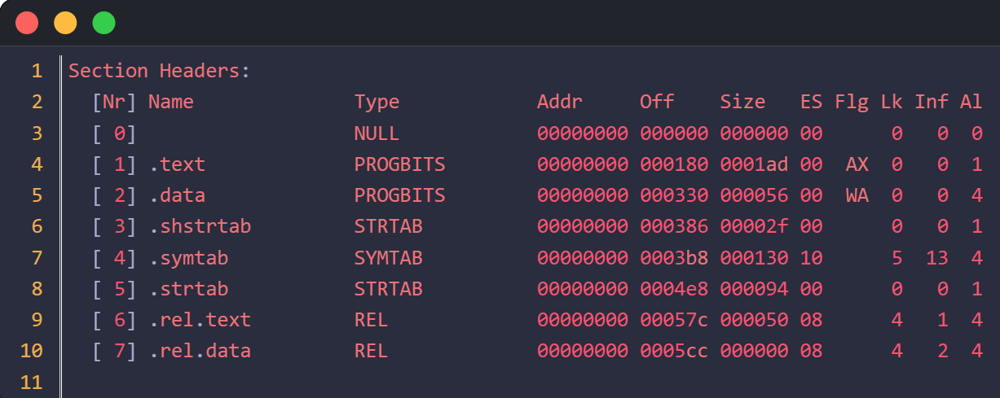
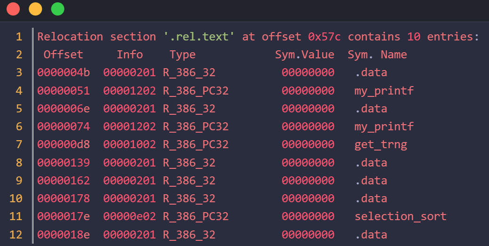
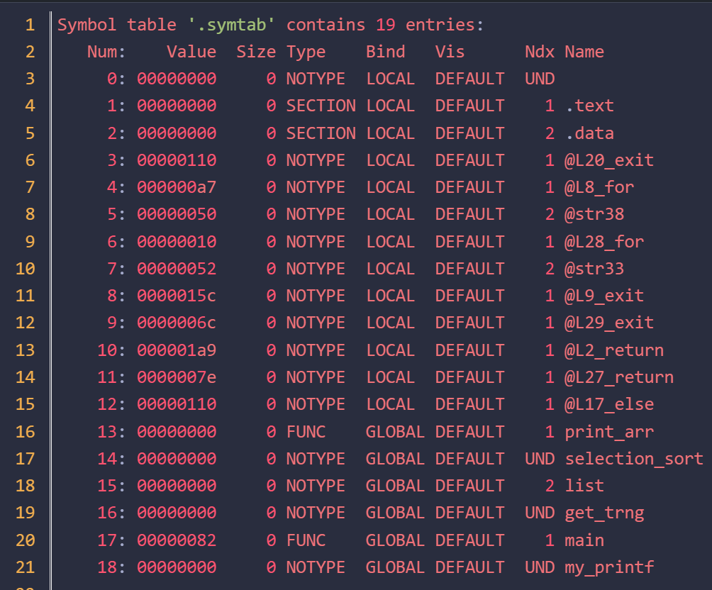
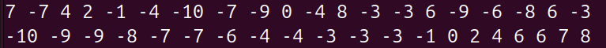

接上一篇文章。
写入文件
1 2 3 4 5 6 7 8 9 10 11 12 13 14 15 16 17 18 void write_obj_file (const char *file_name) char obj_file_name[40 ] = {0 };int file_type = get_file_type(file_name);if (file_type == C_FILE)".c" , ".o" , ARR_ELEM_CNT(obj_file_name));else if (file_type == ASM_FILE)".asm" , ".o" , ARR_ELEM_CNT(obj_file_name));else printf ("%s 文件类型未知\n" , file_name);"w" );if (!obj_fout) {printf ("%s 文件打开失败\n" , obj_file_name);
这段代码的 3~11 行不是重点。但是要介绍一下，根据用户传入的文件名后缀，不管是 xxx.c 还是 xxx.asm，都创建一个新文件，叫 xxx.o;
后面的代码是：
1 2 3 4 5 6 fwrite(&my_elf_g.ehdr, my_elf_g.ehdr.e_ehsize, 1 , obj_fout);int pad_num = my_elf_g.ehdr.e_shoff - my_elf_g.ehdr.e_ehsize;
第 1 行，输出文件头。
按照我们的设计，文件头和段表之间需要填充，第 4 行，计算填充多少字节。
第 5 行，填充 0；__fill_zero函数就不贴代码了；
第 6 行，写入段表。
write_shdrtab
write_shdrtab 函数代码如下：

第 711 行，遍历 &my_elf_g.shdr_head 链表，把 my_shdr_t 结构体中的 sh 成员（Elf32_Shdr 类型）写入文件。
写完段表的代码是：
1 2 3 4 5 6 7 8 9 10 11 12 13 14 15 my_shdr_t *cur_sec_hdr;my_shdr_t *next_sec_hdr;if (cur_sec_hdr->name[0 ] == 0 )continue ; if (&next_sec_hdr->entry !=
以上代码写入每个段的内容，并根据需要填充 0;
第 4 行，采用安全遍历，是为了同时得到 cur_sec_hdr 和 next_sec_hdr;
第 8 行，调用 write_section 写入段，此函数后面会介绍。
如果当前的段和下一个要写的段之间有空隙，则填充 0;
第 9 行的 if 语句， &next_sec_hdr->entry != &my_elf_g.shdr_head;
当 cur_sec_hdr 是链表的最后一个节点的时候，因为是循环链表，next_sec_hdr 会指向链表的头节点，所以 &next_sec_hdr->entry 和头节点的地址相等，所以 if 语句为假的时候，说明 cur_sec_hdr 是链表的最后一个节点,这时候不需要填充，因为没有下一个段了。
pad_inter_sec
1 2 3 4 5 6 void pad_inter_sec (my_shdr_t *before, my_shdr_t *after, FILE *out) int pad_num = after->sh.sh_offset -
pad_inter_sec 用来做段间填充。
第一个参数是前一个段，第二个参数是与之相邻的后一个段。
后面的段偏移减去前面的段偏移，就得到两段的间距，再减去前面的段大小，就是空洞的大小。
write_section
现在我们看 write_section 函数
1 2 3 4 5 6 7 8 9 10 11 12 13 14 15 16 17 18 19 20 21 22 23 24 25 26 27 static void write_section (const char *name, FILE *out) if (string_equ(name, ".text" )) {else if (string_equ(name, ".data" )) {else if (string_equ(name, ".symtab" )) {my_sym_t *my_sym;sizeof (Elf32_Sym), 1 , out);else if (string_equ(name, ".strtab" )) {1 , out);else if (string_equ(name, ".rel.text" )) {my_rel_info_t *rel;sizeof (Elf32_Rel), 1 , out);else if (string_equ(name, ".rel.data" )) {my_rel_info_t *rel;sizeof (Elf32_Rel), 1 , out);else if (string_equ(name, ".shstrtab" )) {1 , out);
7~11行，写入符号表，遍历 &my_elf_g.sym_head，写入每个条目。
之前我们生成指令编码的时候，有个函数
1 2 3 4 5 6 7 8 9 10 11 12 13 14 15 16 17 void write_inst_coding_result (x86_inst_encoding_t *inst_code) if (inst_code->field_flag & INST_FIELD_MODRM) {if (inst_code->field_flag & INST_FIELD_SIB) {if (inst_code->field_flag & INST_FIELD_DISP) {if (inst_code->field_flag & INST_FIELD_IMM) {
第 4 行调用 write_bytes；
第 6 行的 write_modrm 和第 9 行的 write_sib 也会调用 write_bytes；
write_bytes
1 2 3 4 5 6 7 8 9 10 11 void write_bytes (int value, int len) if (scan_loop_g == 2 ) {if (out)1 , out);
这个函数里面最重要的是第 9 行，向文件写入 len 个字节，值源于 value，因为一次最多写 4 个字节，所以用 value 足以表示；
FILE *out 是一个临时文件的指针，当汇编器完成第二遍扫描后，这个临时文件就保存了代码段的内容；
第 7 行 get_text_tmp_file 的代码如下：
1 2 3 4 5 FILE *get_text_tmp_file (void ) return ass_fout;
ass_fout 是一个全局变量，初始值是 NULL;
ass_syntax_2_times 函数会修改 ass_fout;
1 2 3 4 5 6 7 8 9 10 11 12 13 14 15 16 17 18 FILE *ass_fout = NULL ; char text_tmp_file[ASS_FILE_NAME_LEN] = {0 };void ass_syntax_2_times (const char *file_name) "w" ); int times = ASS_SCAN_TIMES;for (int i = 0 ; i < ASS_SCAN_TIMES; ++i) {NULL ;
注意，第 2 行，text_tmp_file 数组用来保存文件名;
write_text_sec
1 2 3 4 5 6 7 8 9 10 11 12 13 14 15 16 17 18 19 const char *get_text_tmp_file_name (void ) return text_tmp_file;void write_text_sec (FILE *out) const char *tmp_file = get_text_tmp_file_name();"r" );char buf[1024 ] = {0 };int in_bytes = 0 ;1 , 1024 , tmp_file_p);while (in_bytes) {1 , in_bytes, out); 1 , 1024 , tmp_file_p);
第 9 行，再次打开 xxx.text.tmp;
把里面的指令编码写入 out 指向的文件。
写入代码段的代码讲完了，下面看写入数据段。
write_data_sec
1 2 3 4 5 6 7 void write_data_sec (FILE *out) ass_symbol_t *pos;
ass_sym_tab_g 是一个链表，如果在语法分析阶段发现符号是 ASS_SYMBOL_TYPE_DATA 类型，就会加入到这个链表中，而且是按照符号出现的先后顺序添加。
1 2 3 4 5 6 7 void write_data_sec (FILE *out) ass_symbol_t *pos;
遍历链表，调用 write_data;
为了看懂第 5 行，我们先复习一下有关的结构体
1 2 3 4 5 6 7 8 9 10 11 12 13 14 15 16 typedef struct init_val {int items_cnt;int cur_addr; struct list_head items_list ;char name[ASS_MAX_ID_LEN+1 ];struct list_head relocation ;init_val_t ;typedef struct item {int def_size;int times;int values_cnt;struct list_head entry ;struct list_head values_list ;item_t ;
存储数据初始值的结构体是 init_val_t，它是一个或多个 item_t 组成的链表。
1 2 3 global str_listdb 3 , 5 , 9 , 22 , -24 , 7 , 7 , 9 times 12 db 0
这是 2 个 item;

sym->init_val_info 是指向 init_val_t 的指针;
到了这里，终于可以输出目标文件了。
我们看看效果。
成果展示
当你输入 gcc main.c 时，它并不亲自动手做所有事，而是先后调用：
前面 2 个步骤，我们的 csub 就可以做。
下面是 test1.c 的源码


第 6 行，是一个全局变量，int 类型的数组，有 20 个元素。

rdrand 这条指令估计读者没有见过，它是处理器提供的一条硬件随机数生成指令 ，用于从 CPU 内置的硬件随机数生成器（Hardware Random Number Generator, HRNG） 中直接获取高质量的随机数。
test2.c 的源码如下

代码比较简单，不赘述。
首先，利用 csub 生成 .ocsub test1.ccsub test2.ccsub start.asmreadelf -a test1.o

这就是段表。
注意，第 7 个条目的 size 是 0，说明没有针对数据段的重定位表。
再看看代码段的重定位表

最后是符号表

现在，利用 ld 命令把这 3 个 .o 链接在一起。ld test1.o test2.o start.o -melf_i386 -o test-melf_i386 是告诉链接器 ld：“请按照 32位 x86 ELF 格式来组织输出文件。”
激动人心的时刻到了，运行可执行文件

排序结果是对的，说明我们的汇编器可以 work!
本文到这里就结束了。
等待我们的是最后一关：链接器。